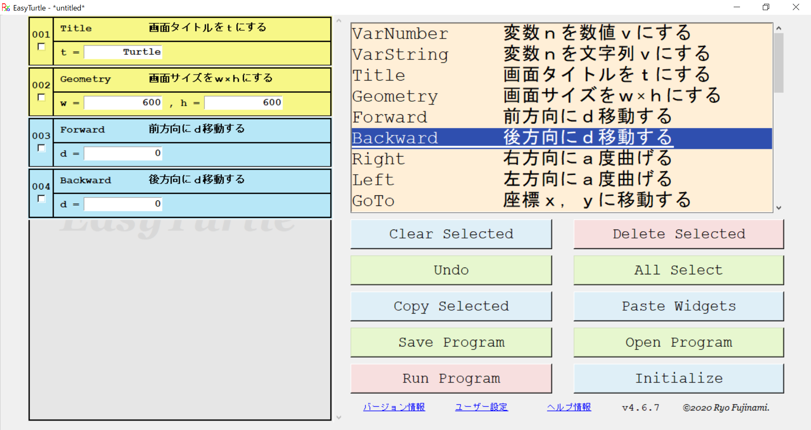
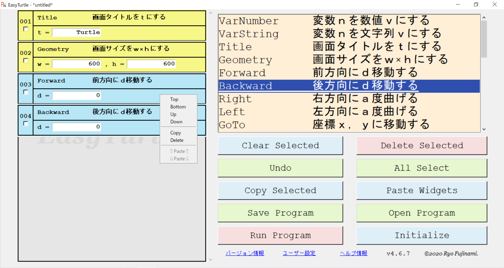
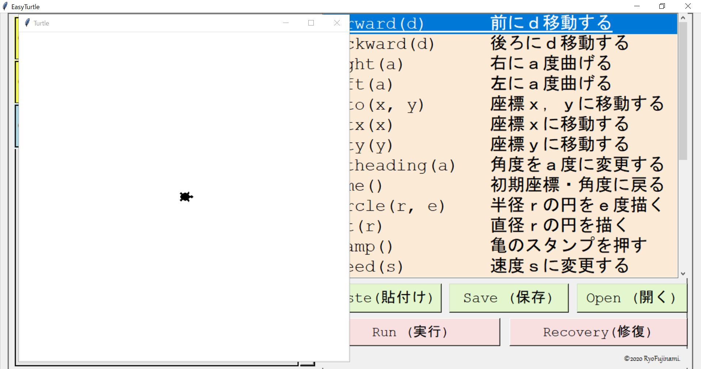
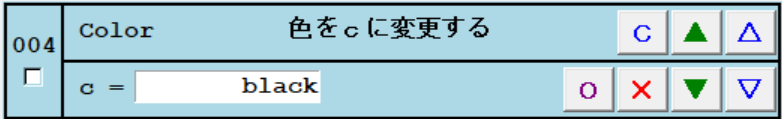

{kind=link}
基本説明
ウィジェットの追加
右側のリストでウィジェットを選択すると左側のリストにウィジェットが追加されます。

ウィジェットの変更
ウィジェットを右クリックすることでメニューが表示されます。

| 名称 | 説明 |
|---|---|
| 一番上に移動 | ウィジェットを一番上に移動する |
| 一番下に移動 | ウィジェットを一番下に移動する |
| 一個上に移動 | ウィジェットを一個上に移動する |
| 一個下に移動 | ウィジェットを一個下に移動する |
| コピー | ウィジェットをコピーする |
| 切り取り | ウィジェットを切り取る |
| 削除 | ウィジェットを削除する |
| 複製 | ウィジェットを複製する |
| オプション | オプションを表示する※１ |
| 有効化 | ウィジェットを有効化する※２ |
| 無効化 | ウィジェットを無効化する |
| 上にペースト | ウィジェットを上にペーストする |
| 下にペースト | ウィジェットを下にペーストする |
※１：一部のウィジェットのみで有効です。
※２：有効にできないウィジェットもあります。
ウィジェットの追加位置
ウィジェットの追加・ペースト位置を指定します
プログラムの最初
プログラムの最初に追加します。
プログラムの最後
プログラムの最後に追加します。
指定位置
指定した位置に追加します。
指定できる値は１～プログラムの最後までです。
位置の自動調整
位置を自動で調整するかどうかを指定します。
メニューバー

ファイル
| 名称 | 説明 | ショートカット |
|---|---|---|
| 新しいタブ | 新しいタブを作成する | Ctrl+N |
| 新しいウィンドウ | 新しい画面を開く | Ctrl+Shift+N |
| ファイルを開く | プログラムを開く | Ctrl+O |
| 上書き保存 | プログラムを上書き保存する | Ctrl+S |
| 名前を付けて保存 | プログラムを名前を付けて保存する | Ctrl+Shift+S |
| 再起動 | アプリを再起動する | Ctrl+R |
| 終了 | アプリを終了する | Ctrl+Q |
編集
| 名称 | 説明 | ショートカット |
|---|---|---|
| 取り消し | 動作を一つ取り消す | Ctrl+Z |
| やり直し | 取り消しを一つやり直す | Ctrl+Shift+Z |
| コピー | 選択されたウィジェットをコピーする | Ctrl+Shift+C |
| 切り取り | 選択されたウィジェットを切り取る | Ctrl+Shift+X |
| 貼り付け | コピーされたウィジェットを貼り付ける | Ctrl+Shift+V |
| 削除 | 選択されたウィジェットを削除する | Ctrl+D |
| 有効化 | 選択されたウィジェットを有効化する | Ctrl+Shift+E |
| 無効化 | 選択されたウィジェットを無効化する | Ctrl+Shift+D |
| すべて選択 | すべてのウィジェットを選択する | Ctrl+Shift+A |
| 選択解除 | すべてのウィジェットの選択を解除する | Ctrl+L |
| 行へ移動 | 指定した行に移動する | Ctrl+G |
実行
| 名称 | 説明 | ショートカット |
|---|---|---|
| 実行 | プログラムを実行する | F5 |
| 最速実行 | プログラムを最大限高速に実行する | Shift+F5 |
オプション
| 名称 | 説明 | ショートカット |
|---|---|---|
| 設定 | 設定タブを開く | Ctrl+, |
| オンラインヘルプ | ブラウザでオンラインヘルプを表示する | |
| オフラインヘルプ | ブラウザでオフラインヘルプを表示する | F1 |
| バージョン情報 | バージョン情報を開く | |
| GitHubで表示 | ブラウザでGitHubのページを開く |
設定

| 設定 | 内容 | デフォルト |
|---|---|---|
save_more_info |
より多くの情報を保存する | 無効 |
ask_save_new |
古いファイルを変更するか確認する | 有効 |
show_warning |
警告と追加情報を表示する | 有効 |
expand_window |
画面の大きさを調整する ※１ | 有効 |
user_document |
ユーザードキュメントを使用する | 実行形式で有効 |
auto_update |
起動時にアップデートを確認する | 有効 |
open_last_file |
前回開いていたファイルを開く | 有効 |
share_copy |
コピーを他のタブと共有する | 無効 |
scroll_center |
中クリックでの移動を有効化する ※１ | 有効※２ |
enable_backup |
バックアップを有効化する | 有効 |
※１：再起動後に有効になる設定です。
※２：不具合が確認されているためLinuxではデフォルトで無効です。